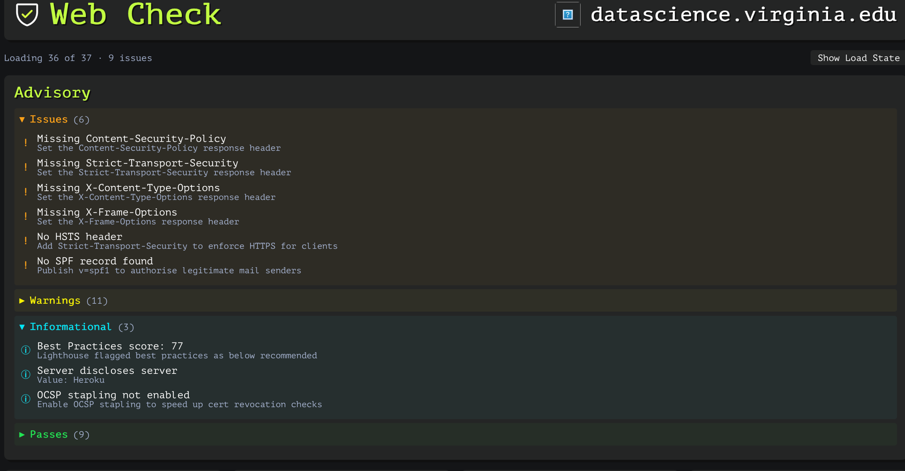
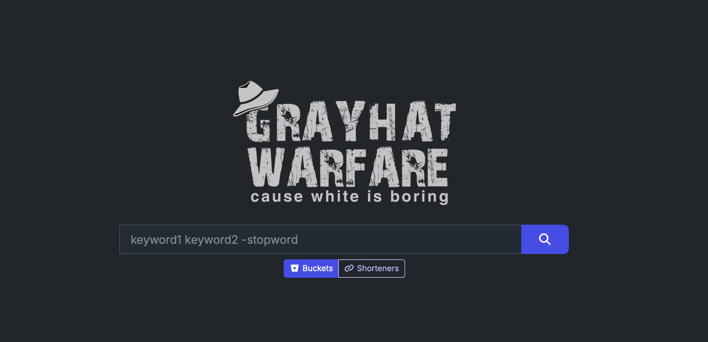
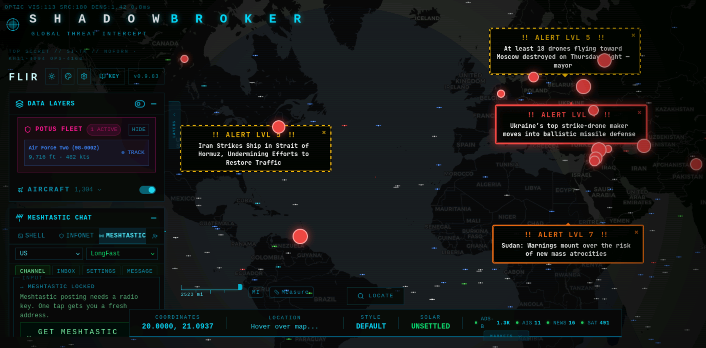
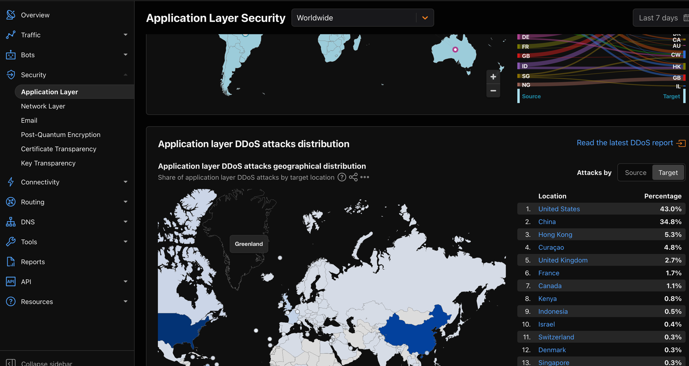
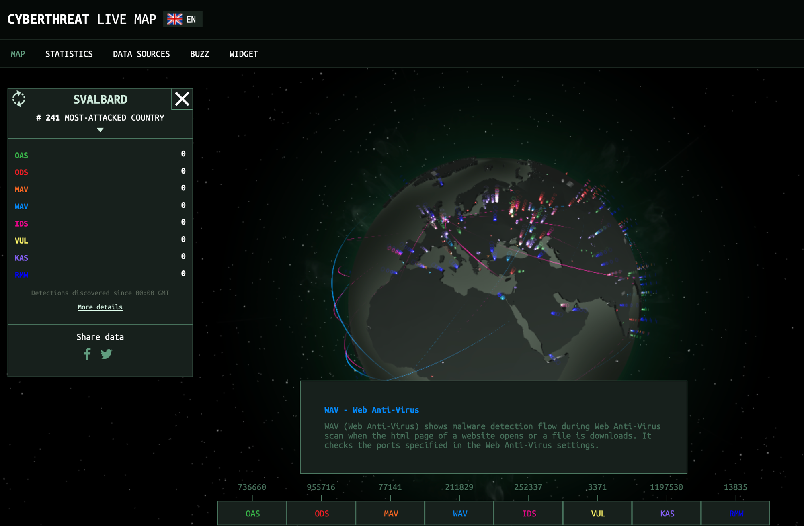

OSINT datasets
Your perimeter is wider than you think. Other people already know.
Every operation in this course — pentests, deployments, red-team exercises, defense planning — starts with knowing what's reachable. The attacker's first move is OSINT; the defender's first move is to do the same OSINT to yourself, before someone else does. Lab 08 hands you the three datasets you'll keep using all semester.
There's a database that knows every email address that's ever been in a public data breach. There's a search engine that crawls the internet's IP space and indexes every banner of every exposed service. Neither is illegal to query, and both are already being queried about you. This lab teaches you to think about your own attack surface the way an adversary already does — and turn that knowledge into a defensive checklist before week 12 of the course, when you'll need it.
OSINT and reconnaissance vocabulary appears throughout: OSINT, breach, pwned, attack surface, pivoting, ASN, dorking, Bellingcat. Every term underlined like this is hoverable: an explainer opens directly below the line you're reading, pushing the rest of the page down — nothing gets covered.
Two sources, two angles. Neither sees the full picture; the skill is the pivot — what each one tells you that lets you ask a better question of the next.
Where to find it
- Have I Been Pwned — free email check, paid API. haveibeenpwned.com · API v3 docs.
- Shodan — free tier has search but limited results; academic license available. shodan.io · developer.shodan.io.
- Shadowbroker aggregator — self-hosted OSINT workspace that fuses 60+ live feeds onto one map; the §6 hands-on installs it on the Kali VM. github.com/BigBodyCobain/Shadowbroker.
- MITRE ATT&CK Reconnaissance — the formal taxonomy of recon techniques. attack.mitre.org/tactics/TA0043.
- OSINT Framework — curated index of hundreds of OSINT tools. osintframework.com.
- Bellingcat's Online Investigations Toolkit — the most-maintained tool catalog by the investigative-journalism org. Categorized by what question you're trying to answer (geolocation, transit tracking, image verification, archives, &c.). bellingcat.gitbook.io/toolkit.
Authorized use — what you can and can't query
Both of the search datasets in this lab are legal to query in the United States. They publish data that was either already public (breach data after leaking) or part of a deliberate research index (Shodan). Querying them does not require authorization from the subject. What you may not do: use the results to access systems or accounts you do not own. A breached password from HIBP is still a stolen password; trying it on a real account is unauthorized access. A vulnerable IP from Shodan is still someone else's host; scanning it actively, exploiting it, or attempting login is a violation of the Computer Fraud and Abuse Act (CFAA). This lab is about understanding the attack surface, not stepping over a line.
1 · What is OSINT?
OSINT — Open-Source Intelligence — is the discipline of producing actionable intelligence from publicly available information. Its non-classified roots go back to WWII (the OSS clipped foreign newspapers); its modern internet incarnation goes back to the early 2000s; its current commodity-tool form is post-2015. The promise: a moderate-skill analyst, no special access, can produce a dossier rivaling what required signal intelligence a decade ago.
For a security course, OSINT is the recon phase that happens before any packet hits the target — what Lab 10 calls "passive recon." Same idea, more sources, more depth:
| Question | Source(s) that answer it |
|---|---|
| What addresses, services, technologies does this organization expose? | Shodan, Censys, BinaryEdge, certificate transparency logs (crt.sh) |
| What credentials of this user already appear in public breaches? | Have I Been Pwned, DeHashed, leakcheck |
| What tools is the threat actor I care about known to use? | MITRE ATT&CK, exploit-db, NVD, public GitHub PoCs |
| What public infrastructure does this organization own? | WHOIS, BGP / ASN data, RIPE/ARIN, DNS history |
| What does this person say in public? | Public social, GitHub commits, conference talks, Way-back Machine |
2 · Have I Been Pwned
Have I Been Pwned (HIBP) is Troy Hunt's free service tracking every public data breach since 2007. As of 2026 the index covers 12+ billion accounts across ~900 breaches. The query model is simple: give it an email, password, or domain, and it tells you which breaches it appears in.
Three legitimate uses, defender-side:
- Self-check. Is your email in a breach? Is the password you reuse? (You shouldn't reuse, but everyone does.)
- Domain monitoring. Subscribe a domain and HIBP notifies you when any of its addresses show up in new breaches. The right defensive primitive.
- Pwned Passwords API. A k-anonymity-preserving way to check if a password (or its hash prefix) is in any leaked corpus. You can integrate this into your own signup flow to refuse known-breached passwords.
# Pwned Passwords lookup — k-anonymity, just sends the first 5 chars of the SHA-1
SHA=$(echo -n "P@ssw0rd" | sha1sum | awk '{print toupper($1)}')
PREFIX=${SHA:0:5}
SUFFIX=${SHA:5}
curl -s "https://api.pwnedpasswords.com/range/$PREFIX" | grep -i "^$SUFFIX:"
# → 93C3A:3645804 ← this password has appeared 3,645,804 times across leaked datamacOS note: sha1sum is a Linux (GNU coreutils) tool and isn't installed by default on macOS. On a Mac, swap it for shasum -a 1 — i.e. echo -n "P@ssw0rd" | shasum -a 1 | awk '{print toupper($1)}'. Everything else is identical. (On the cyber-range Kali box sha1sum works as written.)
2.1 The k-anonymity trick — checking a secret without revealing it
The Pwned Passwords API is one of the cleanest k-anonymity deployments on the public internet. The problem it solves: you want to ask "is this password in any known breach?" without telling the server what password you are asking about. The trick is to ask about a group the password belongs to, not the password itself — then sort it out locally.
- Hash locally. Compute
SHA-1(password)in your code. Forty hex characters. - Send only the prefix. Strip the first five hex characters and POST those to
/range/<prefix>. The remaining 35 characters never leave your machine. - HIBP responds with the group. A list of every known-breached hash that begins with that 5-character prefix — typically hundreds to a few thousand entries, each with a count of how many breaches it appears in.
- Match locally. Scan the returned list for your 35-character suffix. If you find it, your password is in a breach; if you don't, it isn't.
What HIBP learns from your query is: "someone, somewhere, asked about a password whose SHA-1 starts with 5BAA6." That maps to several hundred distinct possible passwords (the entries in the returned group — on the order of 500 for a typical prefix). HIBP cannot tell which one you actually queried — your password is k-anonymous with k equal to the group size.
The same idea — "ask about the group, sort it out locally" — shows up wherever a system needs to answer "have I seen this before?" without revealing what you asked: private lookups that hide the query, federated analytics, Apple's old on-device photo-scanning design. If you remember one ML-adjacent privacy idea from this lab, make it this one.
HIBP's design keeps your query private. It does not keep your password private — your password was leaked years ago, by whichever breach put it in HIBP's database in the first place. Those breaches don't all stay in compact "k breaches you can query" form. Many of them have been re-released as plain-text wordlists:
rockyou.txt— 14 M passwords leaked from the RockYou social-gaming site in 2009. Ships with every Kali install at/usr/share/wordlists/rockyou.txt.gz.RockYou2021— 8.4 B-line aggregation released in 2021. Includes nearly every password from every public breach.- COMB ("Compilation of Many Breaches", 2021) — 3.2 B credential pairs (email + password) from hundreds of merged leaks, indexed and searchable. Different threat model from HIBP: COMB ships the actual credentials.
- SecLists — the canonical pentester wordlist repository.
Passwords/alone has dozens of curated lists.
What that means for the defender: HIBP's k-anonymity protects you when you're checking. It does nothing about an attacker who downloads RockYou2021 once and runs offline cracking against your bcrypt hash forever. The right defenses live elsewhere — slow KDFs (bcrypt, scrypt, argon2), per-user salts, MFA so a cracked password isn't enough, and Pwned-Passwords-style filters at signup to refuse any password from the list before it ever becomes your bcrypt hash.
3 · Shodan
Shodan is the search engine for everything else. Where Google indexes the web, Shodan indexes the protocols: SSH banners, TLS certificates, RDP screenshots, vsftpd version strings, exposed databases, default-password webcams, industrial control systems. It runs continuous scans of the IPv4 internet and now significant portions of IPv6, captures the banners of every responding service, and makes them searchable.
From a defender's standpoint, Shodan is the most important OSINT tool by a wide margin: whatever your team thinks isn't exposed, Shodan can tell you whether it is. Forgotten staging boxes, default-credentialed dev databases, that one container you brought up "just for the demo" — Shodan finds them.
A Shodan query is not free-text the way a Google query is. It's a list of filters, each written filter:value, optionally mixed with plain keywords that match anywhere in the captured banner. Filters combine with a space (logical AND): port:21 country:US means "FTP and US." The handful of filters you'll actually reach for fall into a few families, organized by which part of the scan record they constrain — the network the host sits on, where it is, the service it's running, or what its banner and TLS certificate say:
| Filter family | Common filters | Constrains |
|---|---|---|
| Network & ownership | asn:, net:, org:, isp: | Who owns the IP space (the ASN / CIDR block the host lives in) |
| Location | country:, city:, geo: | Where the host physically resolves to |
| Service & port | port:, product:, version: | Which service is listening and what software/version it reports |
| Banner content | hostname:, http.title:, free-text keyword | Strings inside the captured banner (the DNS name, page title, version string) |
| TLS certificate | ssl.cert.subject.cn:, ssl: | Fields parsed out of the host's TLS certificate |
The skill is choosing the right family for the question. "Find a UVA host" isn't a keyword problem — it's a network-ownership or banner-content problem, and which one you pick changes what you catch.
- Think · 2 minShodan indexes the whole IPv4 internet's service banners. Suppose you want to find every exposed FTP server (a file-transfer server on port 21 — the service you attacked in Lab 01) that belongs to UVA — and only UVA. Using the filter-families table just above, on your own write down the one or two filter fields you'd need (not just keywords) to scope a search from "all of the internet" down to "this organization." Which family answers "what identifies a host as belonging to an org?"
I've done the Think step — reveal Pair & Share
- Pair · 3 minCompare filters. Did one of you reach for
hostname:and the other for the network-ownership field (asn:)? Which one catches a host that UVA owns but never gave avirginia.eduname? - Share · 2 minAs a table, write the single most-precise Shodan query you can for "FTP on a UVA host," then check your filter choices against the three quarterly queries below.
Three queries every defender should run quarterly against their org. shodan here is the command-line client (pip install shodan, plus a paid or academic API key); you can type the exact same query strings for free into the search box at shodan.io — the hands-on in §5.2 uses that free web UI, so you don't need the CLI to follow along.
# 1. Everything you expose on your ASN
shodan search "asn:AS1313" # UVA's ASN — substitute your org's
# 2. Hostnames matching your domain
shodan search "hostname:virginia.edu"
# 3. Specific risky technology footprints
shodan search "hostname:*.virginia.edu vsftpd" # any FTP on a UVA hostEach of those three queries leans on a different filter family from the table above — asn: (network ownership), hostname: (banner content), and a keyword (vsftpd) to pin the technology. Composing filters this way — precise field queries that scope a search down to exactly what you want — is the difference between a Google-shaped query and a useful answer. The technique is called dorking — originally a Google-search term, now used for Shodan, GitHub, and Censys equally.
3.1 Worked example — finding exposed (and vulnerable) MCP servers
A 2025-era example that should hit close to home for this class: the rush to wire LLMs into tools has put thousands of MCP servers and dev tools on the public internet, many bound to 0.0.0.0 (every network interface, so anyone who can reach the machine over the network can connect) when they meant to bind localhost (the same machine only). The cleanest case is Anthropic's own MCP Inspector: CVE-2025-49596 (CVSS 9.4 — on the 0–10 severity scale, that's "critical") let a malicious web page reach the Inspector's unauthenticated proxy and execute commands. It was fixed in 0.14.1, but unpatched instances are still exposed — and they're trivially findable, because the Inspector binds two fixed ports: 6274 (UI) and 6277 (proxy).
Pinning the technology with a filter family from the table above — here service & port plus banner content:
# MCP Inspector — the proxy port is the strongest single signal
shodan search "port:6277"
shodan search 'port:6277,6274 product:"Node.js"' # narrow to the Inspector's stack
# Generic HTTP-transport MCP servers (Server-Sent-Events endpoints)
shodan search 'http.html:"Model Context Protocol"'
shodan search 'http.title:"MCP Inspector"'
shodan search 'http.html:"/sse" "text/event-stream" mcp' # SSE-style MCP endpoints
# Scope it to *your* org so you're auditing what you own, not the whole internet
shodan search 'port:6277 net:128.143.0.0/16' # UVA's IP block in CIDR form (128.143.0.0–128.143.255.255) — substitute your org'sThe version check is the second half: Shodan banners often carry the server's reported version, but the reliable confirmation is to look at the instance you own and compare it against the fixed 0.14.1. The defensive workflow is the same as the quarterly sweep above — find your own exposed AI tooling first, confirm whether it's behind the patched version, and bind it back to localhost if it never needed to be public.
4 · Pivoting between sources
The skill that separates OSINT-as-checklist from OSINT-as-tradecraft is the pivot — taking what one source told you and using it to ask a better question of the next.
- Think · 3 minYou're handed exactly one datum about a target: the domain
example.edu. Draw only on sources you've already met — the catalog in the §1 table (certificate transparency, WHOIS / ASN data, GitHub, the Wayback Machine…), plus HIBP (§2) and Shodan (§3). On your own, sketch the longest pivot chain you can: for each step, write the source you'd query and the new datum it hands you that the next source needs as input (e.g. domain → certificate transparency → a list of subdomains). Where in your chain does a forgotten staging server fall out?
I've done the Think step — reveal Pair & Share
- Pair · 4 minTrace each other's chains. Did one of you start from certificate transparency (subdomains) and the other from HIBP (emails)? Which ordering surfaces an exploitable service fastest?
- Share · 2 minAs a table, commit to the four-or-five-step chain you think a real attacker runs, then compare it to the real pivot sequence in the box just below.
Start: an organization's domain, example.edu.
- Certificate transparency (crt.sh) → list every TLS cert ever issued for
*.example.edu. Often surfaces dev/staging hostnames the org's own team forgot. - Shodan (
hostname:queries) on each subdomain → what's actually exposed at each. - HIBP (domain search) → emails in
example.eduthat show up in breaches; common passwords from those breaches. - CVE lookup (exploit-db, NVD) → for each exposed service+version from Shodan, is there a known exploit?
- Github search → does anyone in the org commit secrets that match those services?
Five steps in, you have a target list that an attacker would also produce — and you have it first. That's the entire defensive value of OSINT.
5 · Hands-on · profile yourself ~45 min
Use the same techniques to audit your own footprint. None of these four steps needs a credential — every one runs against a free public web page or an unauthenticated endpoint. (HIBP and Shodan also offer API access, but those endpoints require a key; the web UIs below expose the same data without one, which is all you need here.)
5.1 HIBP — your email
Go to haveibeenpwned.com and enter your address (e.g. your.netid@virginia.edu). No key, no login — the web search is free.
If you have results, note: the breach date, the data classes exposed (passwords, password hints, IPs, etc.), and whether the breach is recent. Newer breaches are higher-risk; you may need to rotate credentials.
breachedaccount API needs an hibp-api-key, which normally costs money — but you don't have to pay to try it. HIBP publishes a free test key, 00000000000000000000000000000000 (32 zeros), that works only against the dedicated test addresses at hibp-integration-tests.com. For example:
curl -s "https://haveibeenpwned.com/api/v3/breachedaccount/account-exists@hibp-integration-tests.com" \
-H "hibp-api-key: 00000000000000000000000000000000" | jqaccount-exists@, multiple-breaches@, and not-found@ (the last returns 404). Use this to exercise the API call and your JSON parsing without paying; use the free web UI above for your own real address.5.2 Shodan — your public IP
First find your public IP, then view its Shodan record in a browser — the host page is free to read; only the API needs a key:
curl -s ifconfig.me # prints your public IP, e.g. 199.111.x.xThen open https://www.shodan.io/host/<that-IP> in your browser. Shodan may ask you to sign in with a free account, but you do not need a paid plan or an API key to view a host page.
If you're behind a NAT — most home networks share one public IP across every device, so the address ifconfig.me returned belongs to your home router, not your laptop — Shodan will show what that router exposes to the internet. The results may surprise you: home routers and IoT devices (cameras, printers, NAS boxes) often ship with default admin passwords and show up here.
5.3 Certificate transparency — your domain
For a domain you operate (personal site, club site, etc.). If you don't have one, use datascience.virginia.edu to see the technique in action:
curl -s "https://crt.sh/?q=%25.datascience.virginia.edu&output=json" | jq -r '.[].name_value' | sort -uThis will list every TLS certificate ever issued for any subdomain of the domain you queried. If your list contains entries that surprise you — a forgotten staging server, a dev environment from two years ago — that's findings worth writing down.
5.4 GitHub — your username
curl -s "https://api.github.com/users/yourusername/events/public" | jq -r '.[].repo.name' | sort -uList every public repo you've recently touched. Optionally, run trufflehog against each one to check for committed secrets — the most common OSINT-derived breach in 2024–2026 was secrets in public GitHub history. Note that GitHub itself now scans pushes for secrets and blocks them by default: push protection has been enabled by default on new public repositories since March 2024, so freshly committed secrets are increasingly caught at push time — but it does nothing for the years of history already public, which is exactly what trufflehog walks.
5.5 Web Check — one-shot domain recon
The steps above each query one source. Web Check (Alicia Sykes' open-source tool) bundles ~37 of them into a single dashboard: point it at a domain and it pulls the TLS certificate, DNS and mail records, open ports, server location and tech stack, cookies, and — most usefully for a defender — the HTTP security headers, then rolls everything into a colour-coded Advisory. It's the fastest way to get a defender's-eye snapshot of a domain's external posture.
This one isn't a curl command — it's a hosted web app. Can you find the Web Check page on your own? Search the web for web-check, open the tool, and run it against datascience.virginia.edu. (Practising "find the right tool from a one-word hint" is itself an OSINT skill.)
Show answer
datascience.virginia.edu into the box and it runs all 37 checks live. Because it's open-source and self-hostable, you can also docker run lissy93/web-check on your own machine if you'd rather not use the public instance (handy when checking a domain you don't want logged by a third party).
datascience.virginia.edu. Six issues, all low-cost fixes: four missing security-response headers, no HSTS, and no SPF record. The informational panel even leaks that the site runs on Heroku. None of these are "you're hacked," but together they're a tidy attacker-side recon summary — and a defender's to-do list.Read the Advisory top-down the way an attacker would: the Issues are the cheap wins an attacker hopes you forgot (a missing X-Frame-Options invites clickjacking (an attacker hides your real page under a fake one so a user's clicks land somewhere they didn't intend); a missing Content-Security-Policy widens the damage of any XSS (malicious JavaScript injected into your page, running as if it were yours); no SPF record makes your domain easier to spoof in phishing). The Informational rows are reconnaissance gold — "server discloses Heroku" tells the attacker your hosting and therefore which misconfigurations to try. Run this against a domain you own (or care about), and treat every red Issue as a one-line ticket.
5.6 GrayHat Warfare — exposed cloud buckets
The single most common cloud breach of the last decade isn't an exploit — it's a storage bucket left set to "public." GrayHat Warfare is the search engine for exactly that: it continuously scans for open object storage (Amazon S3, Azure Blob, Google Cloud Storage, DigitalOcean Spaces) and indexes the filenames of everything inside, so you can full-text search across billions of exposed files. It's Shodan's idea — index the internet's accidents and make them searchable — pointed at cloud storage instead of open ports.

-stopword exclusion grammar as a search engine; the Buckets tab searches exposed object storage, the Shorteners tab searches expanded short-URLs. Free accounts get a capped number of results per query; paid tiers lift the cap and add the API.For a defender, the move is to search for your own organisation as a keyword — its name, its domain, an internal project codename, an employee surname — and see whether any public bucket holds a file that references you. Backups, database dumps, .env files, customer exports, and "temporary" CSVs are the classic finds. Each hit is a file an attacker can download anonymously, with no exploit and no log on your side, so treat any match as a P1: identify the bucket owner, lock the bucket to private, and rotate anything (keys, credentials, tokens) the exposed files contained.
5.7 Automate the sweep — theHarvester
Steps 5.1–5.6 are six tools run by hand. The whole point of an OSINT pipeline is to stop doing that. theHarvester (preinstalled on Kali) fans a single domain out across dozens of passive sources at once — search engines, certificate transparency, DNS, and more — and returns one structured list of subdomains, hosts, IPs, and emails. It's the cheapest way to turn "I'll check six sites" into "I ran one command," and — importantly for §9 — its output is structured data, which is exactly what an ML model wants as input.
# -d domain · -b which sources (-b all is slower but broader) $ theHarvester -d datascience.virginia.edu -b crtsh,duckduckgo,bing,otx ******************************************************************* * theHarvester ... * ******************************************************************* [*] Target: datascience.virginia.edu [*] Hosts found: 14 --------------------- data.datascience.virginia.edu:128.143.x.x www.datascience.virginia.edu:34.x.x.x staging.datascience.virginia.edu: # <- the kind of surprise the manual crt.sh step also surfaced ... [*] IPs found: 6 [*] Emails found: 3
Save the run as JSON (-f sweep.json) and you have a machine-readable artifact you could diff week-over-week, feed into the Shadowbroker pivots from §4, or — in §9 — hand to a clustering model. theHarvester is passive (it only queries third-party indexes), so it stays inside the authorized-use line; the moment you act on a host it returns, the usual rules apply.
5.8 The LLM-agent way — Claude-OSINT
theHarvester automates the fan-out; it still can't decide what to pivot to next. The 2026 frontier is handing that judgement to an LLM agent. Claude-OSINT is a clean example — and notably not an MCP server or a bespoke app, but a pair of Claude Code skills (plain SKILL.md Markdown files) that load into Claude's context and turn the assistant into a recon operator. One skill encodes a 5-stage methodology and reporting discipline; the other is a tactical arsenal of 90+ modules — the same sources you ran by hand in §5.1–5.7, written as something an agent can execute and chain on its own.
What it wraps maps almost one-to-one onto this lab: certificate transparency and WHOIS/RDAP, S3/GCS/Azure bucket enumeration (§5.6), SPF/DMARC/DKIM email-security audits (§5.5), breach correlation across HIBP/DeHashed/HudsonRock (§5.1), vendor fingerprinting, and a 48-pattern secret scanner with live validators for AWS, GitHub, and — fittingly — Anthropic and OpenAI keys. Install is just dropping the skills into your Claude Code config:
$ git clone https://github.com/elementalsouls/Claude-OSINT.git $ cp -r Claude-OSINT/skills/osint-methodology ~/.claude/skills/ $ cp -r Claude-OSINT/skills/offensive-osint ~/.claude/skills/ # then just ask Claude Code an OSINT question — the skills auto-trigger
5.9 Break — what an attacker does with a finding interactive
Recon is only half the story. A finding on its own is inert — what makes it a finding is the attack it unlocks. This is the Break beat of the lab's Build → Break → Secure arc: pick one of the exposures you just learned to discover and watch how an attacker turns it into impact — and how the defender shuts it down. Everything below is a simulation; nothing is sent anywhere.
- Think · 2 minStart from one finding: "the domain publishes no SPF record" (a Web Check result from §5.5). On your own, write the attack chain as a short numbered list — each line is one concrete action that gets the attacker closer to real harm, ending in an actual bad outcome (money moved, an account taken over, data stolen). For example, step 1 might be "attacker sends an email that looks like it's from
it@target.edu." Aim for 3–5 steps. Then mark the one step a defender could block most cheaply, and write the control that blocks it.
I've done the Think step — reveal Pair & Share
- Pair · 3 minCompare chains with a neighbour. Do they reach the same bad outcome? Whose chain is longer — and does a longer chain make the attack more or less likely to succeed? Settle on the single cheapest control that would break the chain.
- Share · 2 minAs a table, commit to one answer: the cheapest control for the no-SPF finding. Then scroll to the widget below, pick "No SPF record," and check your control against the green Secure step it shows.
6 · Hands-on · the Shadowbroker aggregator ~45 min
Shadowbroker (BigBodyCobain) is a self-hosted OSINT aggregation platform that pulls live data from 60+ public feeds into one map. It lets you see — in real time — what's flying, sailing, orbiting, broadcasting, burning, jamming, or otherwise happening around the world. From a defender's perspective, the value is twofold: it teaches you what's visible to anyone with a browser, and it gives you a single workspace for the OSINT pivots from §4.
git clone, the docker-compose commands, the localhost:3000 UI) runs identically on your personal machine, and it will be noticeably faster than the cyber range: the VCR Kali VM is modestly sized and the browser-in-a-browser Guacamole desktop adds latency. If you have Docker on your laptop (or are happy to install it), do it there. Use the Virginia Cyber Range only if you'd rather not install Docker or your laptop is short on RAM/disk — the steps below work the same either way.Cyber-range setup — read first.
This section runs in the Virginia Cyber Range. A Lab 08 OSINT-aggregator exercise has already been provisioned for you — sign in with your Google account and launch it, the same way you connected in Lab 01:
Open the Virginia Cyber Range ↗
The rest of this section runs on the Kali VM inside that exercise. (Prefer your own laptop? See the note just above — it's faster.)
Copy / paste into the cyber range. The Guacamole browser desktop doesn't share your local clipboard directly. To paste a command from this page into Kali, open the Guacamole side panel — press Ctrl + Alt + Shift (or Ctrl + Option + Shift on macOS) — paste into its clipboard box, then paste again inside the terminal. The same shortcut closes the panel. For anything longer than a line or two (e.g. a filled-in .env), it's often easier to upload a file than to copy/paste: the same side panel has a file-transfer area — drop the file there and it lands in the Kali home directory, ready to mv into place.
6.1 Prerequisites
On the Kali VM in the cyber range:
- Docker + Docker Compose — not preinstalled on the cyber-range Kali image; you'll install it in 6.2. Verify afterward with
docker --version && docker-compose --version. - 4 GB RAM available — Shadowbroker's backend memory-limits to 4 GB. The default Kali VM in the cyber range may need to be re-provisioned at "large" sizing.
- ~3 GB free disk — Docker images, frontend build, ingested feed cache
- One API key: aisstream.io (ship tracking) is required and free — click Get started and log in with your GitHub account. Sign up beforehand (see 6.4); without this key Shadowbroker ingests no ship data. Shodan and OpenSky keys are optional but unlock significantly more coverage.
6.2 Install Docker and Docker Compose
The cyber-range Kali image ships without Docker, so install it from Kali's package repos. This installs the Docker engine (docker.io) plus Compose, which you invoke as the hyphenated docker-compose command.
# Refresh the package index, then install the Docker engine + Docker Compose $ sudo apt-get update $ sudo apt-get install -y docker.io docker-compose ... Setting up docker.io (24.0.x) ... Setting up docker-compose (1.29.x) ... # Start the Docker daemon now and have it start on every boot $ sudo systemctl enable --now docker
Confirm both are working before moving on. Both version commands must print:
$ docker --version && docker-compose --version Docker version 24.0.x, build ... docker-compose version 1.29.x, build ...
sudo in this lab. The cyber-range user isn't in the docker group, so prefix the Docker commands below with sudo (e.g. sudo docker-compose up -d). If you'd rather drop the sudo, run sudo usermod -aG docker $USER then open a fresh terminal — but using sudo is the quickest path through this section.6.3 Install Shadowbroker
$ git clone https://github.com/BigBodyCobain/Shadowbroker.git ~/lab08/shadowbroker Cloning into '/home/kali/lab08/shadowbroker'... Receiving objects: 100% (12,840/12,840), 48.6 MiB | 12.0 MiB/s, done. $ cd ~/lab08/shadowbroker
6.4 Configure feeds (the .env file)
- Go to aisstream.io and click Get started (top-right).
- Log in with your GitHub account when prompted (the only sign-in option — it's free).
- On the welcome page, open API Keys → create a key, then copy it.
Copy the example and fill in your aisstream.io key. Optional keys go in the same file.
$ cp .env.example .env $ nano .env
# .env (minimal — keys you have, blank for keys you don't)
AISSTREAM_API_KEY=your-aisstream-key-here # required (free signup)
SHODAN_API_KEY= # optional — your Lab 08 self-audit key
OPENSKY_CLIENT_ID= # optional — OAuth2 client for full flight data
OPENSKY_CLIENT_SECRET=
SENTINEL_HUB_CLIENT_ID= # optional — SAR/satellite imagery
NASA_EARTHDATA_TOKEN= # optional — NASA fires/weather
# Resource limits (raise if you have headroom on the Kali VM)
BACKEND_MEMORY_LIMIT=4g
FRONTEND_MEMORY_LIMIT=2g6.5 Launch
$ sudo docker-compose pull [+] Pulling 14/14 ✔ shadowbroker-backend Pulled ✔ shadowbroker-frontend Pulled ✔ shadowbroker-infonet Pulled ✔ shadowbroker-postgres Pulled ... $ sudo docker-compose up -d [+] Running 9/9 ✔ Network shadowbroker_default Created ✔ Container shadowbroker-postgres-1 Started ✔ Container shadowbroker-backend-1 Started ✔ Container shadowbroker-frontend-1 Started ✔ Container shadowbroker-infonet-1 Started backend ready. frontend serving on http://localhost:3000
First run takes ~3 minutes — image pulls plus the frontend build. Subsequent restarts take ~10 seconds.
6.6 Open the UI
Open Firefox inside the Kali VM (via the cyber range's Guacamole desktop) and go to http://localhost:3000. Give it a minute or two to load. The map appears almost immediately, but the feeds populate gradually as each ingester connects and back-fills — markers, alerts, and the bottom-bar counts (ADS-B, AIS, NEWS, SAT) climb over the first couple of minutes. If it looks sparse at first, wait and refresh rather than assuming something's broken.

Markers you'll see populate over those first minutes:
- Aircraft (planes icon) — live ADS-B feeds from OpenSky Network. Color-coded by category (commercial / military / private jet / unknown).
- Ships (vessel icon) — live AIS from aisstream.io. Cargo, tanker, fishing, military, pleasure.
- Earthquakes / Fires — USGS + NASA FIRMS feeds.
- Satellites — TLE-based propagation for ~10,000 tracked objects.
- CCTV (camera icon) — ~11,000 cameras that publish public streams; click to view.
- Radio / scanner — KiwiSDR (HF), OpenMHZ (public-safety scanners).
The left sidebar has the layer toggles (37+); the top-left search is geographic; the bottom-right time-machine lets you scrub the last 24 hours of recorded telemetry.
6.7 A defensive use case
- Think · 2 minShadowbroker fuses 60+ live public feeds onto one map — aircraft (ADS-B), ships (AIS), satellites, and ~11,000 publicly-streamed CCTV cameras. Before you zoom in: on your own, predict three categories of thing an adversary would actually see hovering over or pointed at your campus on a quiet evening, and which one is a misconfiguration rather than an intentional public feed.
I've done the Think step — reveal Pair & Share
- Pair · 3 minCompare predictions. Did your partner think of the CCTV layer — the cameras that are exposed by accident rather than on purpose? Which of your three is the one a counter-intelligence officer would care about most?
- Share · 2 minAs a table, commit to the single most surprising thing you expect to be observable, then turn on the layers below and check it against what the map actually renders over your facility.
Open the layer panel, turn off everything except Aircraft. Zoom to your campus. You will see commercial flights overhead, possibly a UVA Police helicopter on a quiet evening, and — depending on the time of day — Customs or military overflights. This is what a counter-intelligence officer would see watching your facility. The same view is available to your adversary.
Now turn on CCTV. Each red marker is a publicly-streamed camera. Some are intentional (city traffic cams, weather cams); many are misconfigured private installations exposed by Shodan-style scanning. Zoom out and you'll see the count rise into the thousands. Each one is a potential reconnaissance asset against the facility it overlooks.
The defensive read-across: if you're responsible for an organization's physical perimeter, this tool is what your adversary is using to plan. Turn it on yourself, look at your facility, identify what's actually observable, and treat that as a finding.
6.8 Tear down when done
$ sudo docker-compose down [+] Running 9/9 ✔ Container shadowbroker-frontend-1 Removed ... ✔ Network shadowbroker_default Removed stopped. data volumes preserved; re-run `sudo docker-compose up -d` to resume.
If you want to fully reset (drop the postgres state too): sudo docker-compose down -v. Useful if you change API keys and want a clean ingestion.
Shadowbroker is licensed under the AGPL-3.0, which is the copyleft variant of GPL specifically designed for network-served software. If you modify Shadowbroker and deploy your modified version where users can interact with it — even just inside your org over a network — the AGPL requires you to publish your changes to those users. For the lab this is fine (you're not redistributing). If you ever deploy a modified version publicly, read the license first.
7 · Threat-landscape dashboards — internet weather
Everything so far has been target-focused: you point a tool at one email, domain, or IP and read what comes back. A second family of OSINT resource is the opposite — aggregate dashboards that show the global threat landscape, the "weather report" of the internet. You don't query a target; you watch trends. Shadowbroker (§6) is the DIY version of this genre; the two below are polished, free dashboards you'd actually keep open on a second monitor during an incident.
Cloudflare Radar is the most useful of the bunch for a defender, because it's built on real measurement rather than theatre. Cloudflare sits in front of a large fraction of all web traffic, so Radar can report — for free, with an API — global and per-country traffic trends, internet outages, BGP/routing anomalies, DDoS attack volumes broken down by source and target, top domains, and protocol adoption. It's where you check "is there a global DDoS surge right now, and is my country/industry in the blast radius?"

Kaspersky Cyberthreat Live Map is the genre's most famous example: a rotating 3-D globe streaming Kaspersky's own malware-detection telemetry in real time (categories like OAS on-access scan, WAV web anti-virus, IDS intrusion detection, and so on), with a per-country "most-attacked" ranking.

- Think · 2 minA live map claims to show "attacks happening right now." On your own, work out how it could possibly know. You've already seen three clues this section: Shodan actively scans the whole internet (§3), Cloudflare Radar sees attacks because a huge share of web traffic flows through Cloudflare, and Kaspersky's map is fed by its antivirus installed on millions of machines. Generalise from those into a list of every distinct way to collect this kind of telemetry — then predict which one yields the cleanest, least-ambiguous "this is definitely malicious" signal.
I've done the Think step — reveal Pair & Share
- Pair · 3 minCompare lists with a neighbour. Did either of you land on a sensor whose every packet is malicious by construction? What property would make a data source give you free, perfectly-labelled training data?
- Share · 2 minAs a table, commit to the one collection method you think produces the cleanest labels, then check it against §7.2 below.
7.1 Where the telemetry comes from
None of these dashboards has a magic sensor on every network. They fuse a few well-understood collection methods, each with a different vantage point and a different bias:
| Collection method | How it works | Who relies on it |
|---|---|---|
| Vantage-point telemetry | You see attacks because traffic already flows through you. A CDN/reverse proxy sees the requests to every site it fronts; an endpoint anti-virus sees detections on every machine it's installed on (opt-in, e.g. the Kaspersky Security Network). | Cloudflare Radar, Kaspersky, Microsoft, Google |
| Passive network sensors | Watch traffic nobody should be sending you. A network telescope (also called a darknet) watches large blocks of unused IP addresses — nothing legitimate lives there, so any packet that shows up is someone scanning or probing, and is suspicious by default. Spam traps and DNS sinkholes do the same for junk mail and for malware "phoning home" to its operator (command-and-control). | CAIDA, Shadowserver, university research |
| Active scanning | Probe the whole internet on a schedule and record what answers. This is Shodan/Censys (§3): the data is "what's exposed," not "what's attacking." | Shodan, Censys, GreyNoise |
| Honeypots | Stand up a decoy that looks worth attacking and record everyone who tries. Because nothing legitimate has a reason to touch it, every interaction is hostile. (See 7.2.) | Threat-intel vendors, GreyNoise, researchers |
The honeypot row is special, and it's the answer to the Think prompt: it is the one source whose signal is clean by construction — no benign traffic to filter out, so every record is a labelled attack.
7.2 Honeypots — and ML honeypots
A honeypot is a system deliberately exposed to be attacked, instrumented to log everything the attacker does. It serves no production purpose, so any connection to it is, by definition, unauthorised — which makes its logs the cleanest threat data you can get. Honeypots come in two depths:
- Low-interaction — emulate just enough of a service to capture the first moves. Cowrie fakes an SSH/Telnet login and records the credentials tried and commands run; Dionaea emulates vulnerable Windows services to catch malware. Cheap and safe, but a careful attacker notices the emulation.
- High-interaction — a real, sacrificial operating system, fully monitored. Captures the entire intrusion (post-exploitation, lateral movement, tooling) at the cost of more risk and upkeep. A network of these is a honeynet.
Honeypots are where a lot of the "attack map" telemetry and most public threat-intel feeds originate (GreyNoise, for instance, is essentially a planet-wide honeypot/sensor grid that tells you whether an IP is mass-scanning everyone or targeting you specifically).
1 · Honeypots that use ML to be more convincing. The weakness of a low-interaction honeypot is that it runs out of script — an attacker types a command the emulator doesn't know and the illusion breaks. LLM-driven honeypots close that gap by generating plausible responses on the fly: projects like shelLM (an LLM-backed fake Linux shell) and Galah (an LLM web honeypot that fabricates believable HTTP responses) keep an attacker engaged far longer, yielding richer behavioural data.
2 · Honeypots as a training-data factory for ML. This is the connection to §8. A supervised intrusion detector needs labelled attack traffic, and labels are the expensive part of any security ML project. A honeypot hands you a stream of guaranteed-malicious, pre-labelled examples for free — the positive class on a plate. Many published IDS and malware-family classifiers are trained partly on honeypot captures for exactly this reason. The catch a good DS student should flag: that data is biased toward opportunistic, internet-wide attackers (the ones who find a random decoy), not the targeted adversary who would never waste time on your honeypot — so a model trained only on honeypot data has a blind spot precisely where it matters most.
7.3 Canary tokens — detecting recon against you
Honeypots catch attackers who come to a decoy system. A canary token shrinks that idea down to a single decoy artifact and scatters it where an intruder will trip over it: a fake AWS key in a config file, a tracking-pixel URL in a "passwords.xlsx" on a file share, a bogus admin login in your own leaked-looking GitHub repo. The token does nothing — until someone uses it, at which point it phones home and you get an alert with the snooper's IP, time, and user-agent. It is the cheapest, highest-signal detection you can deploy: zero false positives, because no legitimate process has any reason to touch it.
This is the defender's counter-recon move and the mirror image of this whole lab: everything in §5 was you running OSINT against a target; a canary token is how you detect someone running OSINT (or worse) against you. Drop a fake credential into the exact places this lab taught you to search — a public bucket, a GitHub repo, a pastebin — and you'll know the moment an attacker harvests it. canarytokens.org (Thinkst, free) generates them in a click; the same company's "Canary" honeypots are the enterprise version.
A canary-token trip is a perfectly labelled malicious event — no ambiguity, no analyst triage. That makes token hits an ideal anchor for the same supervised-learning idea as honeypots: seed tokens across your environment and every trip is a guaranteed-positive example you can use to tune an anomaly detector or to validate that your SIEM (the central system that collects security logs and raises alerts) actually fires. Same lesson as 7.2 — deception generates the clean labels that supervised security ML is always short of.
8 · OSINT × ML — the pipelines underneath
You spent the last seven sections doing OSINT by hand: type a query, read a panel, pivot to the next source. That is what an analyst does once. An OSINT platform — Shadowbroker, Maltego, Recorded Future, Bellingcat's investigations toolkit — does the same thing for ten thousand entities at a time, automatically, and that is where machine learning lives. The connection is not "OSINT plus a sprinkle of AI." OSINT pipelines and ML pipelines have the same shape; OSINT just chooses messier inputs.
- Think · 3 minOn your own, take three OSINT questions — "is this AIS ship the same one I saw on satellite?", "which AIS track went dark where no normal ship would?", "which of these 50,000 Shodan banners belong to the same campaign?" — and label each with the standard ML problem type it really is (you've trained models for all three under different names).
I've done the Think step — reveal Pair & Share
- Pair · 4 minCompare labels. Did one of you call the "same ship?" problem entity resolution and the other call it classification? Which framing changes the algorithm you'd reach for — and is the "went dark" one supervised or unsupervised?
- Share · 2 minAs a table, commit to one ML problem type per question, then check all three rows against the mapping table just below.
8.1 OSINT problems map onto standard ML problems
| OSINT question | ML formulation | Algorithms you'll meet |
|---|---|---|
| Is this AIS-reported ship the same one I just saw on satellite? | Entity resolution / record linkage — given heterogeneous observations, decide which refer to the same real-world thing. | Blocking + pairwise classifiers (logistic regression, gradient boosting), siamese networks, Fellegi-Sunter probabilistic linkage. |
| Which of these 50,000 Shodan banners belong to the same campaign? | Clustering — group items by similarity without labels. | k-means, DBSCAN, HDBSCAN, hierarchical clustering on TLS-cert / banner / JA3 fingerprint vectors. |
| Which AIS track turned off its transponder where no normal ship would? | Anomaly detection — flag rare or surprising points relative to a learned baseline. | Isolation Forest (an unsupervised anomaly detector), one-class SVM, autoencoder reconstruction loss, time-series change-point detection. |
| Is this drone a commercial DJI, a hobbyist build, or a military quadcopter? | Classification — assign a label from a fixed set. | Random forest / XGBoost on engineered features, CNN on the visual sensor data, transformer on raw ADS-B / telemetry sequences. |
| How similar is this leaked-credential dump to the one we already have indexed? | Embeddings + nearest-neighbor search — turn unstructured text into vectors, find the nearest matches. | Sentence-BERT, fastText, hashed-character n-grams; FAISS / pgvector / Annoy for retrieval. |
| Given an org chart of 10K accounts pivoting through breaches, who is the highest-blast-radius identity? | Graph / link analysis — model the network and rank by structural importance. | PageRank, HITS, betweenness centrality, community detection (Louvain), graph neural networks for downstream classification. |
| Three sensors saw a ship at slightly different positions and times — where is it really? | Track / sensor fusion — combine noisy multi-source observations into a single estimate. | Kalman filters, particle filters, multi-hypothesis tracking, learned Bayesian fusion. |
8.2 An OSINT pipeline is a standard ML pipeline with messier inputs
Every OSINT platform, including the Shadowbroker you just ran in §6, is structured as the same five-or-six-stage pipeline:
The same shape recurs throughout the course — the chat model in Lab 03, the microagent you built in Lab 04, and the agentic pentester you'll meet in Lab 10 are all variants of this exact pipeline. OSINT is just one shape of input.
8.3 Why this matters for a security-and-ML course
Two reasons. First: the defenders' job is no longer "stare at queries one at a time." When an adversary runs OSINT against your organization, they're running ML over OSINT. The mismatch between attacker-with-pipeline and defender-with-spreadsheet is the gap this course exists to close. Second: the ML algorithms most useful for OSINT — entity resolution, clustering, anomaly detection, embeddings — are the same ones useful for malware family clustering, intrusion detection, log anomaly, and credential-stuffing detection. You only have to learn them once; OSINT is one of several places they show up.
9 · Hands-on · ML on OSINT data ~45 min
Time to stop reading about OSINT × ML and do it. You've scraped service banners by hand with Shodan (§3) and watched honeypots produce labelled attack data (§7.2). Here you'll take a pile of raw banners and recover the hidden campaigns inside them with unsupervised learning — exactly the "which of these 50,000 banners belong to the same campaign?" problem from the table in §8.1, shrunk to a gradeable size.
- Think · 2 minYou're given 198 banners and told several "campaigns" hide inside, each being hosts that share a fingerprint. Before writing any code: what part of a banner carries the campaign signal, and what part is a decoy? Would you cluster on the IP, the port, or the banner text — and if the text, would word tokens or character n-grams catch a fingerprint like
dropbear_2019.78orCN=hakai?
I've done the Think step — reveal Pair & Share
- Pair · 3 minCompare with a neighbour. The IP is cosmetic and the port is a weak hint — did you both land on the banner text as the signal? Why do character n-grams beat whitespace tokens when the giveaway is a messy substring that doesn't split on spaces?
- Share · 2 minCommit as a table to a featurisation + clustering plan, then go implement it and see whether your Adjusted Rand Index clears 0.60.
9.1 The task
The dataset mlcluster_banners.json is a single JSON array of 198 banner records. Inside it hide 6 campaigns (hosts sharing a fingerprint — a Dropbear-SSH botnet, a CN=hakai self-signed cert family, GoAhead/Dahua IoT cameras, a Mirai-style Telnet login, an nginx+PHP webshell) plus ~28 legitimate "noise" services (Apache, OpenSSH, Postfix, MySQL…) that should not cluster with anything. Your job: cluster the banners so hosts in the same campaign share a label.
| Field | Type | Role |
|---|---|---|
id | int | 0-based, contiguous, equals array position. label[i] describes id i. |
ip | string | Plausible public IPv4. Cosmetic — do not cluster on it. |
port | int | 22, 80, 443, 23, 554… a weak hint at best. |
banner | string | The signal. Raw banner text (may contain \r\n, version strings, cert subjects, login prompts). |
You implement one function in mlcluster.py:
def cluster_banners(banners):
# Return a list of integer cluster labels, one per banner, in id order.
# The integer values are arbitrary — only the *grouping* matters
# (which ids share a label). Noise points may each get their own label.
...The surrounding harness (load JSON, print labels as one clean JSON array to stdout) is already written — leave it alone. The shipped stub returns all-zeros, which passes the scaffold check and fails the quality check; your task is to make quality pass.
9.2 Run & grade
You'll need scikit-learn for the suggested approach (pip install scikit-learn); the autograder itself is pure standard library and needs nothing.
$ python3 mlcluster.py # prints the JSON label array $ python3 test_mlcluster.py # spawns mlcluster.py and grades it
The grader runs two groups, the same shape as every other lab autograder:
- SCAFFOLD — your script prints a parseable JSON list of ints with length 198. Passes on the unedited stub (proves the plumbing works before you write any ML).
- QUALITY — the Adjusted Rand Index between your labels and the hidden 6-campaign ground truth is ≥ 0.60. Fails on the all-zeros stub; a real TF-IDF + clustering solution clears it comfortably (the reference solution scores ≈ 0.72).
1. Vectorise banner["banner"] with TF-IDF — character n-grams (analyzer="char_wb", ngram_range=(3,5)) beat word tokens here, because the giveaway tokens are messy substrings (dropbear_2019.78, CN=hakai) that don't split cleanly on whitespace. 2. Cluster the vectors — Agglomerative clustering with cosine distance, or KMeans; you may assume between 3 and 8 campaigns — don't hard-code 6, since the skill is recovering the count, not being handed it. 3. Return .labels_ as a plain list of ints in id order. Iterate on the n-gram range, the metric, and the cluster count until QUALITY passes — watching ARI move as you tune is the point of the exercise.
Submit your edited mlcluster.py on Gradescope (the server runs a superset of the local tests). Grading: SCAFFOLD is pass/fail and gates the rest; QUALITY is scored on the ARI threshold, so an all-clusters-in-one or every-host-its-own-label answer both score zero — you have to recover the actual grouping.
10 · Best practices
11 · Anti-patterns
- Using a breached password on a real account. A password in HIBP is still a stolen password. Querying HIBP is legal; logging in with the result is not. This is the most common way well-intentioned researchers end up indicted.
- Active scanning of Shodan-discovered hosts you don't own. Shodan's data is from their scans. Your follow-up
nmapis your traffic, hitting their infrastructure. Same legal standard as Lab 10's scope rules. - Doxxing real people in your hands-on writeup. The hands-on uses you and people who consent. Don't write up someone else's OSINT footprint without explicit permission, even for "educational" purposes.
- "Open source so it must be free to use." Some breach datasets float around without consent; some leaks include attorney-client material; some leaked files contain classified material. Read the source; if you wouldn't show it to your dean, don't put it on the lab VM.
Assignment · audit a consenting target
Pick a target — yourself, or a friend / club / small organization that gives you written permission. Perform a full OSINT sweep, then write a defensive remediation plan.
Two deliverables. Part A is the recon-and-remediation dossier below. Part B is the ML task in §9 — submit your edited mlcluster.py separately on Gradescope. Both are required; they exercise the two halves of this course (the tradecraft and the model).
The sweep
At minimum, cover:
- HIBP — every email address associated with the target.
- Shodan — every IP and every hostname; record exposed services and versions.
- Certificate transparency (crt.sh) — every TLS cert ever issued for the target's domain(s).
- GitHub / GitLab — every public repository owned by the target; run a secrets scanner.
- WHOIS / ASN data — who owns the IP space; are there forgotten allocations?
- The Wayback Machine — historical versions of the target's public pages; what did they used to expose?
Don't try to remember every tool from scratch. Use Bellingcat's Online Investigations Toolkit as your tool index for this assignment. It's categorized by what question you're answering rather than by tool name — "domain ownership", "image origin", "person search", "transportation tracking", etc. Pick the chapter that matches your target type and work outward. Going beyond the six minimums above (e.g., adding social-media exposure, document/corporate records, geolocation if your target has a physical site) is encouraged and adds to the "non-trivial exposures" criterion in the rubric.
The deliverable
findings.md— one row per discovered exposure, with source, evidence, and risk rating.remediation.md— for each finding, what should be done to close it: rotate password, patch service, take down forgotten resource, remove committed secret.queries.md— every search you ran, exactly as you ran it. The next person who repeats your audit should be able to copy-paste.consent.md— the written authorization from the target. (For self-audits: a signed statement that the target is you.)
Rubric
| criterion | points |
|---|---|
| Consent properly documented | 10 |
| All six source categories queried; queries reproducible | 25 |
| Findings include at least 3 non-trivial exposures with evidence | 25 |
| Remediation is specific and actionable (not "improve security") | 20 |
| You actually applied one of the remediations and verified it | 10 |
| Writeup is honest about what you didn't find and why | 10 |
| Total | 100 |
FAQ
Is it really legal to do all this without authorization?
Querying — yes. Acting on the results, when those actions touch systems you don't own — no. The line is whether your packets reach the target. HIBP and Shodan are queries to their servers; the target never sees them. The moment you nmap the IP Shodan returned, the target's logs show your traffic and you need authorization. Lab 10 walks this line in detail.
Why pay for Shodan when the free tier exists?
The free tier returns ~10 results per query. The paid tier (or academic license — available to UVA students with .edu address) returns the full result set, plus historical data, plus monitoring. For the assignment the free tier is enough; for a real defensive program the paid tier is worth it.
What about Censys and BinaryEdge?
Direct Shodan competitors with slightly different scan cadence and indexing depth. Worth knowing about; use whichever your school has access to. The data is largely overlapping.
What if my OSINT audit finds something serious — like an exposed production database?
If it's your organization: tell your security team immediately, in private. If it's not your organization and the exposure is severe: contact the organization through their security@ alias or a CERT (e.g. CERT/CC for U.S. orgs). Do not probe further to "confirm." A reputable vulnerability disclosure protects you and them.
Where do I find tools for [thing the lab didn't cover]?
Two indexes, in order: Bellingcat's Online Investigations Toolkit — categorized by question you're answering, maintained by working investigators, updated continuously. Then the older but broader OSINT Framework — tree-structured index of hundreds of tools, less curated, more exhaustive. Start with Bellingcat, drop to the OSINT Framework when you need something obscure or non-investigative.